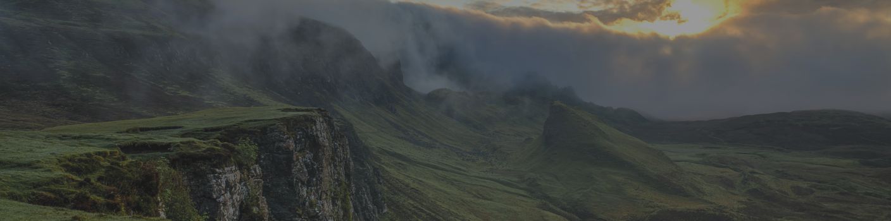
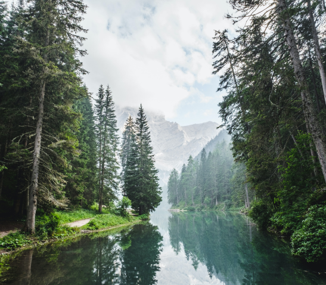
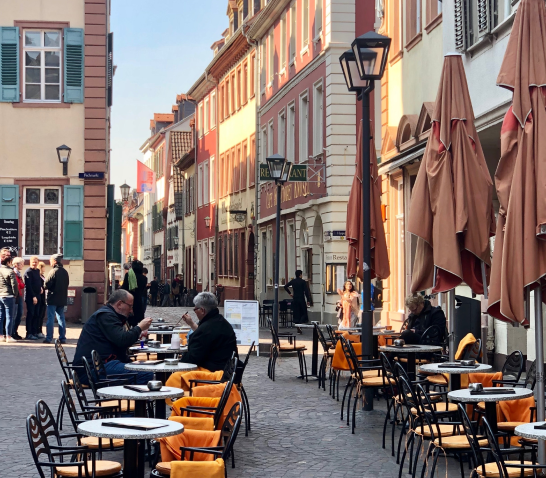
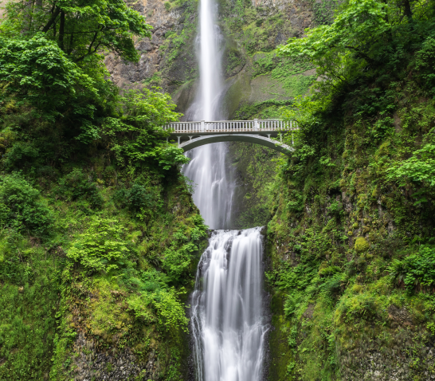
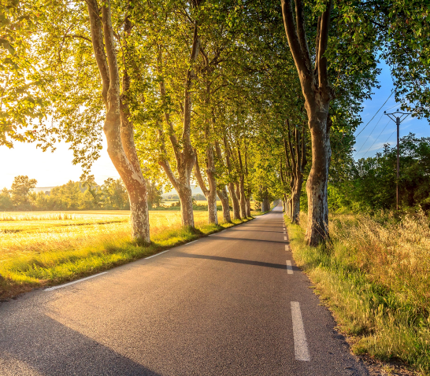
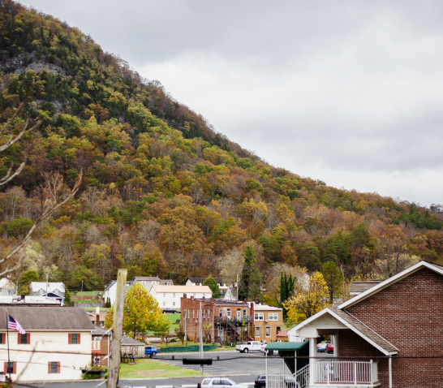

Vesterbord
Where the forest meets the fjord.
Tucked into the quiet countryside near the Mariager fjord, Vesterbord is a place of soft light, still water and open sky. Ancient woodland gives way to reed-lined shores, and the days move to the slow rhythm of the tide. Here there are no crowds and no hurry, only birdsong at dawn, mist over the meadows and a horizon wide enough to breathe into. The Glass Huts sit at the heart of it all, close enough to wander out on foot and far enough to feel genuinely alone with nature.
A short drive from Aarhus, yet a world away from everything.

Activities

Restaurants & shopping
The kitchens near the fjord cook with the seasons. Expect just-landed fish, smoked and cured the old way, wild herbs foraged from the forest floor, and slow-braised local game served beside vegetables pulled from nearby market gardens. A handful of intimate restaurants and harbourside cafes are a short drive away, each pouring crisp Danish beer and thoughtful natural wines. Ask us to reserve your table and we will point you to our own quiet favourites.
Browse the region at an unhurried pace. Independent studios and workshops sell hand-thrown ceramics, woven textiles and Scandinavian homeware made by makers who live and work along the coast. Farm stalls and delis brim with honey, cheese, rye bread and preserves, everything you need to lay out a slow breakfast back at your hut. The nearby town centres keep boutiques and galleries within an easy stroll, so an afternoon of gentle browsing never feels rushed.

Experiences in nature
The Mariager fjord is one of Denmark's longest and most sheltered, its calm water made for slow mornings. Slip out by kayak or stand-up paddleboard at first light, drift past reed beds where herons stand watch, and let the ripple of the paddle be the only sound. In summer the shallow inlets are warm enough for a swim, and guided boat trips reveal seals basking on the sandbanks near the fjord's mouth.
Beyond your door, marked trails thread through beech and pine, past clearings carpeted with wood anemones in spring and glowing gold in autumn. Walk quietly and you may glimpse roe deer at the treeline, red squirrels overhead or a white-tailed eagle circling the fjord. When darkness falls the low horizon and near-total lack of light pollution turn the sky into a canopy of stars, the finest kind of stargazing right outside your glass wall.

Go for a drive
Some of the region's finest scenery unfolds through the windscreen. Follow the winding lanes that trace the fjord, where the road rises over rolling farmland then dips back down to water shining between the trees. Pull over at the old harbour towns of Mariager and Hobro, wander their cobbled streets and half-timbered houses, and stop wherever a view or a coffee tempts you. It is a drive best taken slowly, with the windows down.
Set out a little further and the day opens up. The salt meadows and birdlife of the Lille Vildmose reserve lie within easy reach, as do Viking-age burial mounds and windswept Baltic beaches. The city of Aarhus, with its art museums, design shops and harbour restaurants, is under an hour away, an effortless contrast to the quiet of the huts. Whichever direction you choose, you will be back by dusk in time to watch the light fade over the fjord.

Small-town charm
Mariager is known across Denmark as the town of roses, a cluster of pastel cottages, climbing blooms and cobbled squares that seem to have paused somewhere in the last century. Wander lanes lined with tiny craft shops and tea rooms, pause in the courtyard of the medieval abbey, and let the pace of a place with barely two thousand souls settle over you. It is the kind of afternoon that ends with an ice cream by the water.
Behind the postcard streets there is real living history to explore. Ride the vintage steam railway that puffs along the fjord in summer, step aboard the salt centre to see how the region's white gold was once harvested, or time your visit for a village market or midsummer bonfire. Small galleries and local musicians keep the towns quietly alive after dark, and everyone you meet has the time for an unhurried conversation.